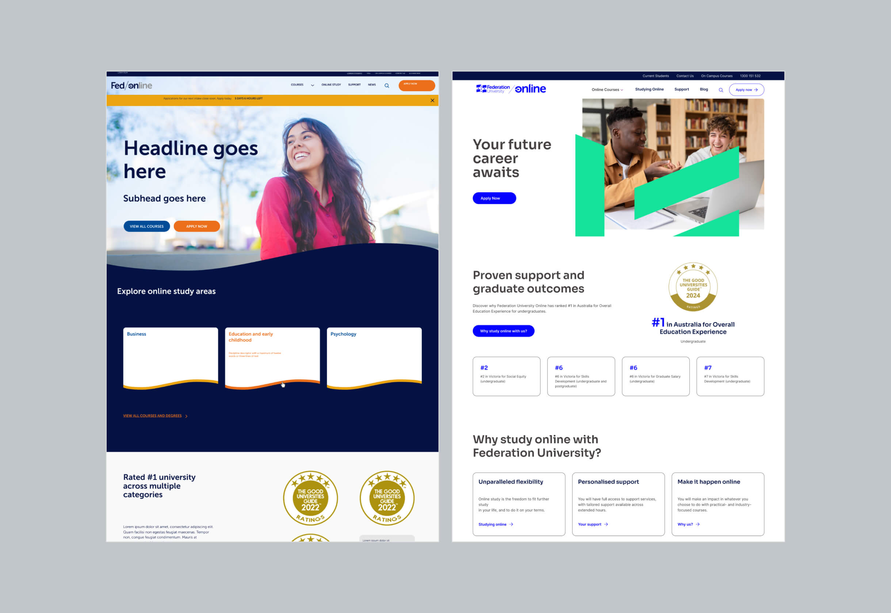
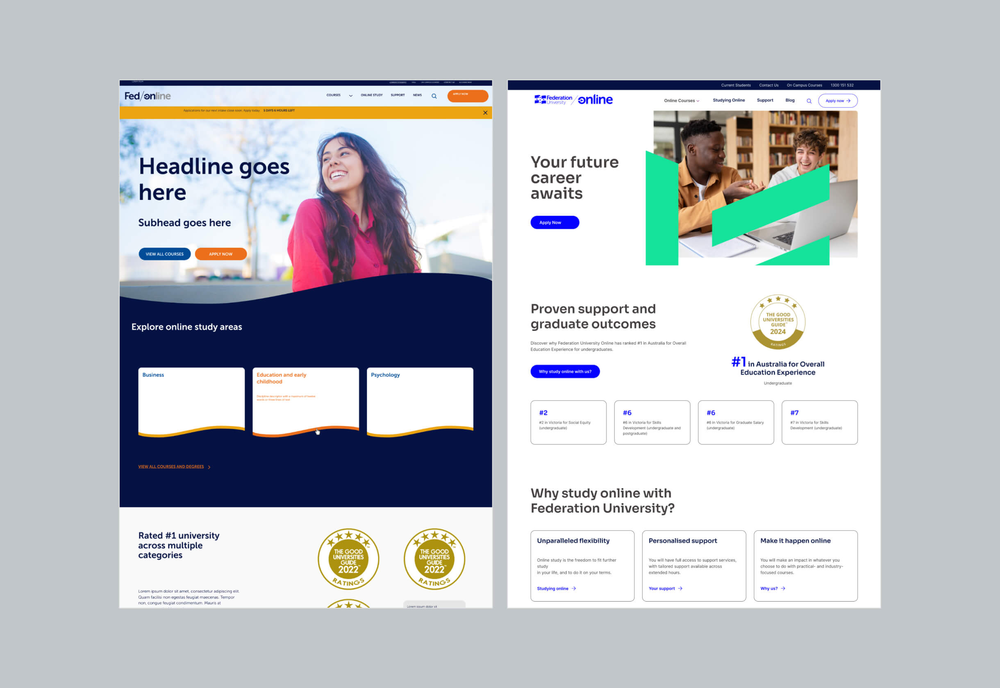
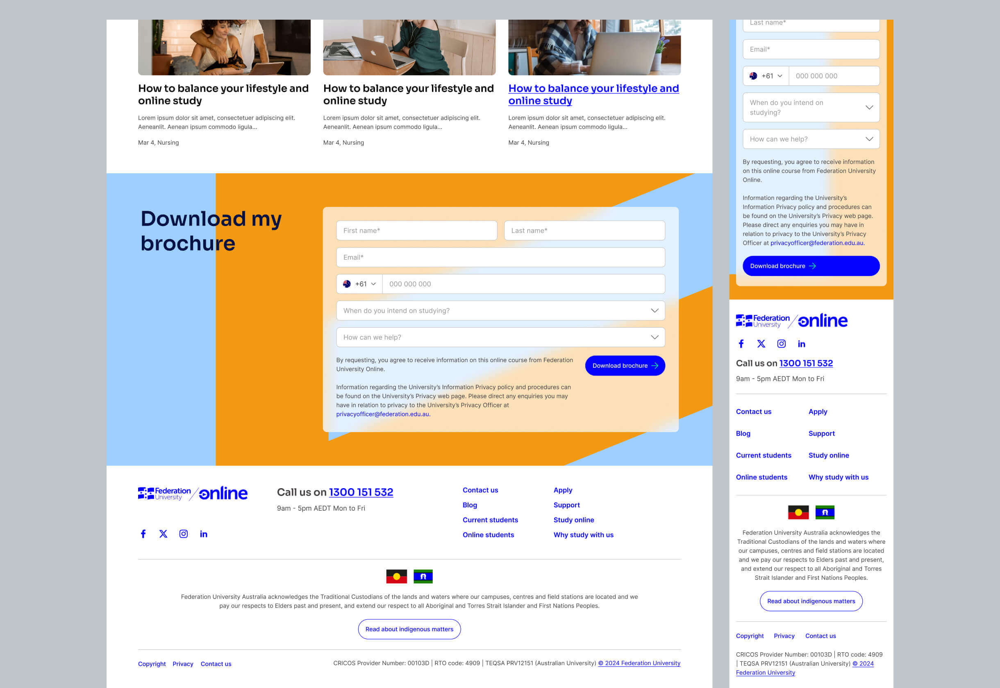
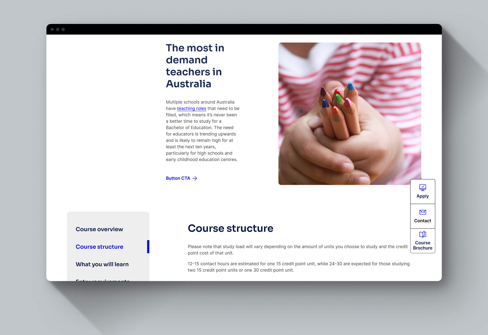
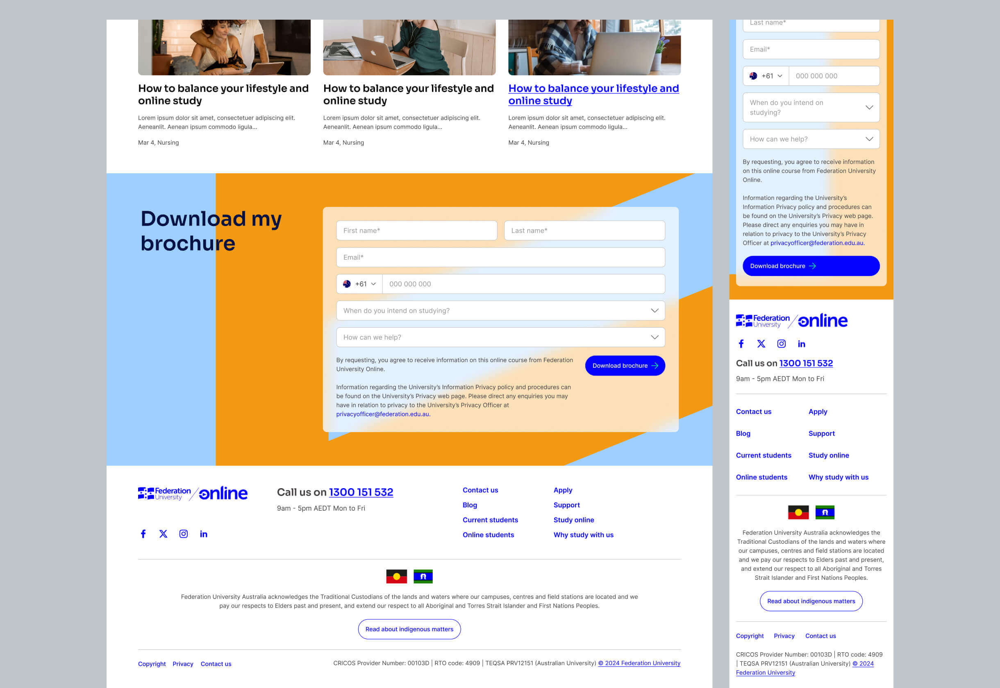
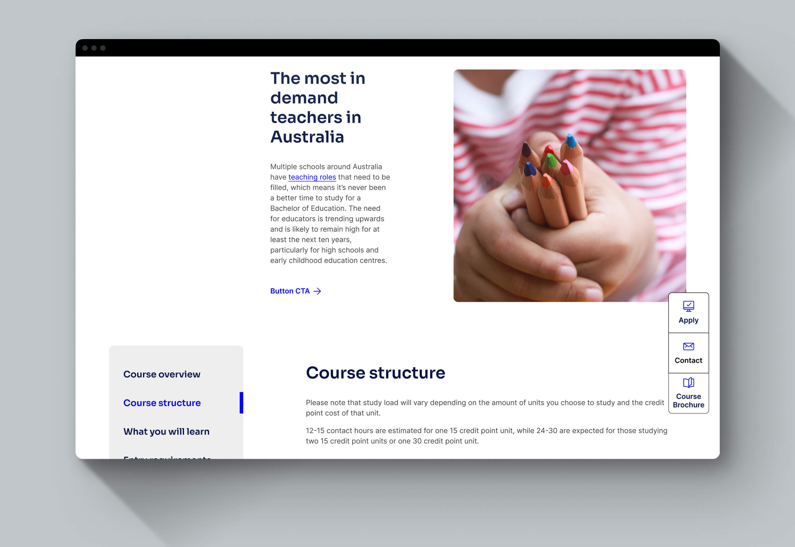

04 federation university online


2024
UX/UI Designer
Federation University requested a rapid redesign of their online learning platform to align with the newly updated on-campus website and refreshed brand identity. This project operated as a design sprint with limited time, focusing on revamping major pages to ensure a seamless transition to the updated branding while maintaining functionality and user experience.
The redesign successfully transferred Federation University’s updated brand identity to the online platform. The refreshed designs not only ensured visual consistency across all touchpoints but also enhanced the platform’s appeal to prospective students and its effectiveness in supporting future marketing campaigns. Stakeholders were highly satisfied with the quick turnaround and impactful results, marking the project as a significant achievement for the Federation team.

Brand Integration
I was responsible for translating QUT’s refreshed brand identity into the digital environment, ensuring that the new visual language was applied consistently and effectively across the online platform. This involved incorporating updated colour palettes, typography systems, iconography, and graphic elements in a way that balanced brand expression with usability. Careful attention was paid to visual hierarchy, contrast, and tone of voice to reflect the university’s modern, forward-thinking character while supporting clarity and accessibility in a digital context.
UI Design Updates
I led the redesign of key UI components to align with the new brand guidelines, focusing on visual consistency, functionality, and scalability. Buttons, forms, navigation menus, and content modules were all reworked to meet updated design standards and improve usability. Components were designed to be flexible and reusable across different page types, supporting a modular system that could adapt to future content and structural changes without sacrificing design integrity.
 

Accessibility Compliance
Accessibility was a core consideration throughout the design process. I ensured all UI updates adhered to WCAG 2.1 AA standards, including appropriate colour contrast ratios, keyboard navigability, clear focus states, and screen reader compatibility. Typography was optimised for readability, interactive elements were clearly distinguishable, and structural markup considerations were built into the design handoff to ensure inclusive access for students with a wide range of needs and abilities.
Responsive Design
To deliver a consistent and seamless user experience across devices, I designed and tested all UI elements for responsiveness. Layouts, components, and content behaviours were tailored for desktop, tablet, and mobile breakpoints to ensure readability, functionality, and visual consistency regardless of screen size. This approach supported the platform’s accessibility goals and ensured usability for a broad range of prospective students engaging with the platform on different devices.
Stakeholder Collaboration
I worked closely with the university’s branding and marketing teams to ensure that the digital implementation of the brand was faithful to their vision while also meeting usability and functional requirements. This involved regular design reviews, collaborative working sessions, and presenting interactive prototypes to stakeholders for feedback. Their input was incorporated into iterative design cycles, resulting in a solution that balanced strategic brand goals with user-centred design outcomes.
 



UX/UI DESIGNER
Harry is a UX/UI designer who crafts intuitive, high-performance websites that align with business goals. With expertise in UX research, wireframing, prototyping, and UI design, he creates seamless, user-focused experiences.
His superpower is the ability to deeply understand business needs and translate them into effective design solutions, supported by a structured workflow. He is business-driven, with a strong focus on critical reviews, iteration, and design systems to ensure the delivery of high-quality design outcomes.